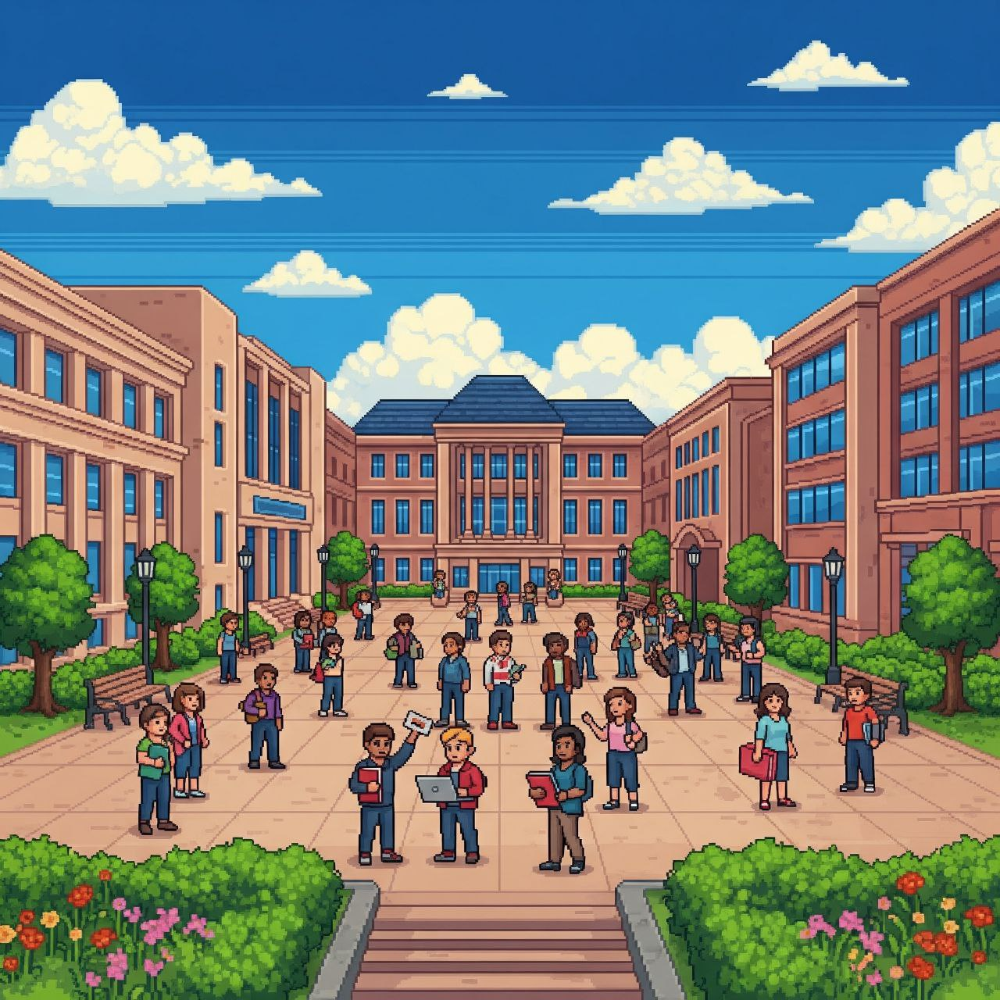
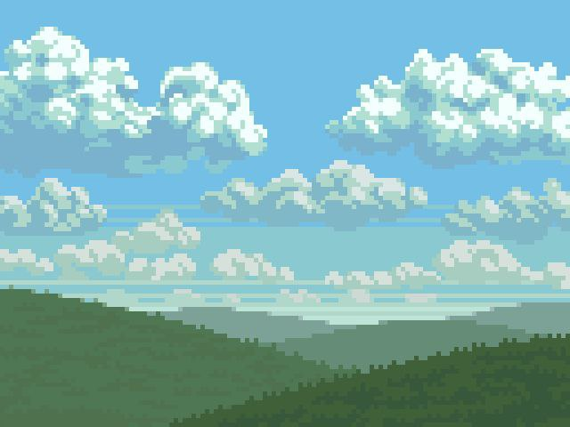
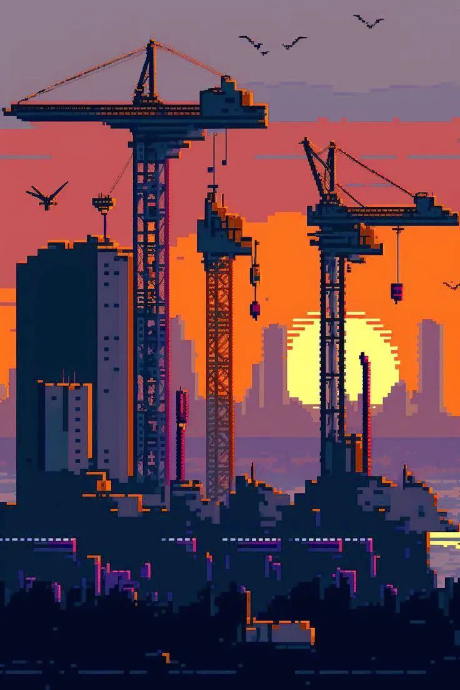
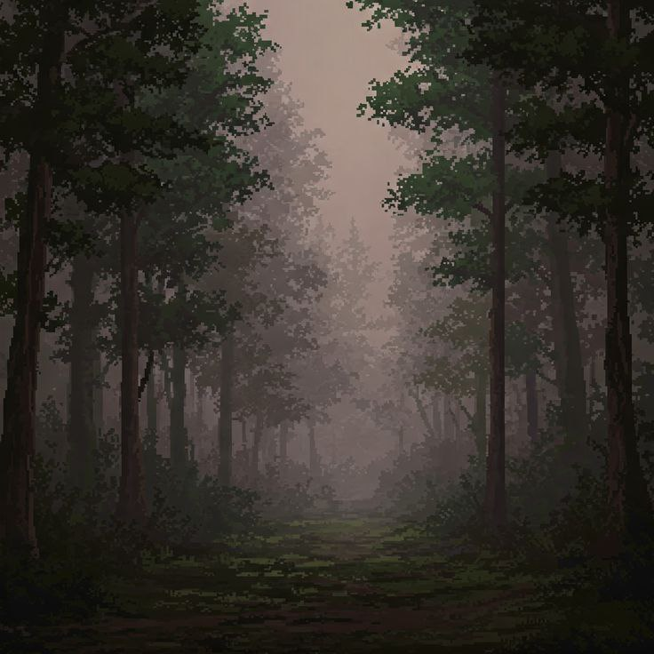
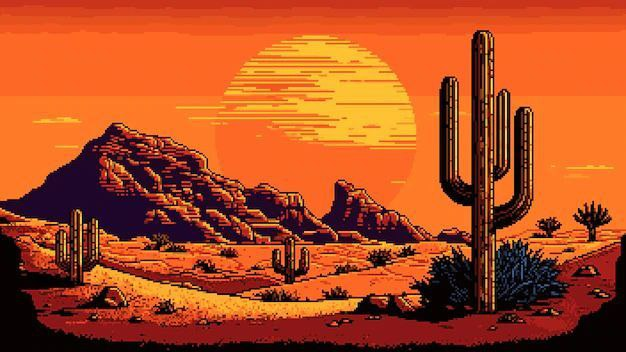
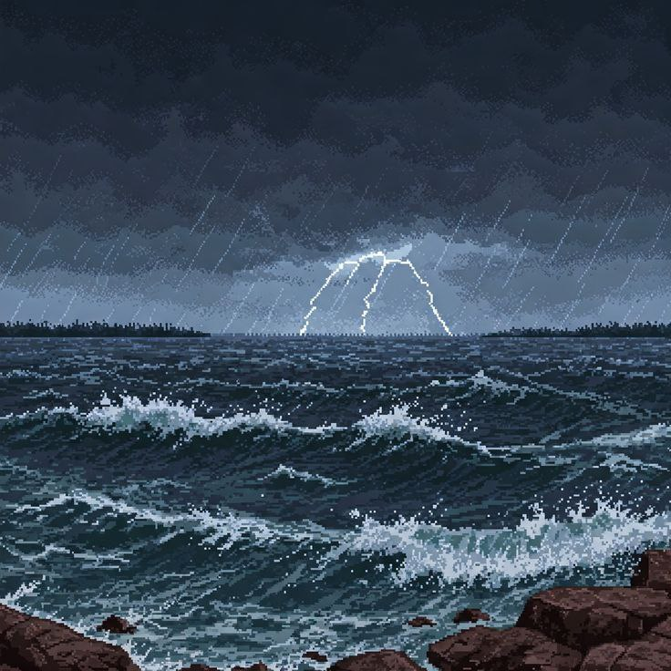
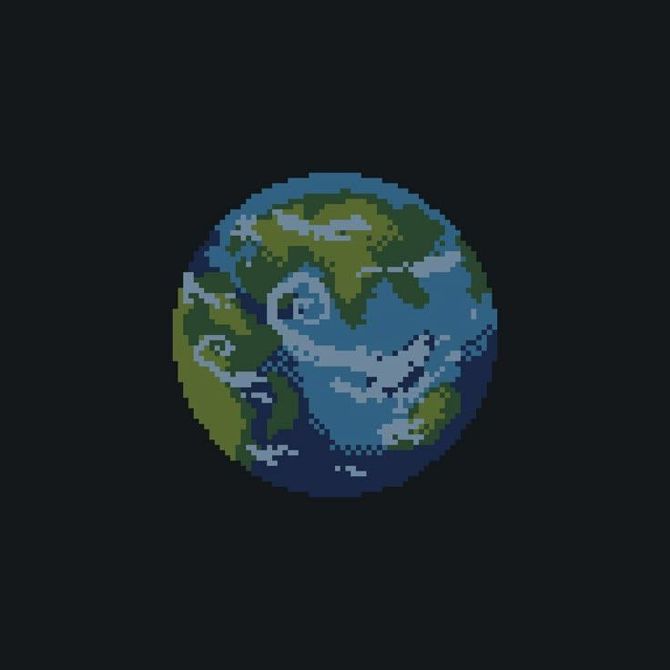

Фритрек и нулевой спринт: Подготовка к работе
</HTML>
Это было самое начало пути. На этом этапе важно было проникнуться основами и настроиться на учёбу. И, возможно, подумать, как новые знания могут повлиять на ваше будущее.
Я не знаю что написать, поэтому предсталяю вам небольшую пиксельную историю фронтенд-разработки.
(Сгенерировано ИИ)
1 спринт: Я — чистый лист
</HTML>
На первых этапах мы работали со страхами и сомнениями, которые часто испытывают новички. Один из них — страх перед чистым листом. Это, конечно же, намного сложнее, чем боязнь куска бумаги. Часто за этим ощущением скрываются более глубокие вопросы: с чего начать? а вдруг будет слишком сложно? что, если я не справлюсь?
Каждый новый проект начинается как эта живописная пиксельная карта. Ты такой: "О, да я тут быстро Grid-сетку набросаю!" А потом оказывается, что каждый пиксель ведет себя по-своему, и ты просто пытаешься найти тот самый !important.
1 спринт: А если не получится?
<CSS>
Первый проект — позади! Но это всё ещё самое начало пути. Радость могла быстро померкнуть и смениться ожиданием провала. Или вы, наоборот, могли вдохновиться успехами и поверить в себя.
Мои div-ы после того, как я попытался выстроить сложный макет без Flexbox: хаотичный, но какой-то свой, уникальный городской пейзаж. И да, я все еще ищу, куда делся z-index: 9999.
2 спринт: Погоня за идеалом
<desigions>
На этом этапе вы уже достаточно разбирались в основах вёрстки, чтобы понять, как много ещё впереди. Вы могли попытаться погнаться за идеалом и понять, что он недостижим. А, может, вы вовсе и не подвержены перфекционизму и вместо того, чтобы сделать идеально, старались просто сделать.
Когда ты пять часов пытаешься понять, почему анимация не работает, хотя в коде все "правильно": это как бродить по этому пиксельному лесу, где каждая веточка — это CSS-свойство, которое почему-то не применяется.
2 спринт: О тех, кто рядом
care
Всё это время вы были не одиноки (хотя, возможно, иногда и чувствовали, что одни против целого мира). Вас окружали одногруппники, команда сопровождения и просто близкие люди, которым можно пожаловаться, если очередной макет просто так не поддавался. Осваивать что-то новое легче, когда рядом есть единомышленники, не правда ли?
Иногда кажется, что сделать сайт идеально адаптивным — это как пересекать эту пиксельную пустыню. Вроде все на месте, но стоит поменять размер экрана, и все едет, как мираж. .
3 спринт: Обходные стратегии
</support>
На этом курсе вы постоянно решали разные задачи. В какой-то момент вам могло показаться, что решения просто иссякли. Значит, пришло время посмотреть на задачу под другим углом.
На этом проекте я не тонул в информации, я тонул в бесконечных float: left и clear: both. Это как плыть по этому океану, пытаясь удержать все элементы от неконтролируемого дрейфа.
3 спринт: Когда опускаются руки
</lifes-style: none;>
Во время учёбы часто возникает чувство, когда не знаешь, за что хвататься. Вроде и проектную пора сдавать, и задачи хочется порешать, и в теории получше разобраться, и жизнь не забыть пожить. В такие моменты очень нужна концентрация. Вспомните, откуда вы её черпали.
Каждая попытка идеально выровнять элементы по центру — это новая пиксельная гора, которую нужно покорить. И эти "облачка" над вершинами? Это мои мечты о том, чтобы margin: auto наконец сработало как надо.
«Сейчас я здесь»
</experience>
Сейчас вы уже очень много знаете о вёрстке. Но это только начало. Во-первых, впереди ещё много материала про «красотищу». Во-вторых, с окончанием курса учёба не заканчивается. Вёрстка — это целый мир. И этот мир постоянно меняется. Познать его полностью не получится, но это тот случай, когда важен сам процесс познания. Ведь часто путь — и есть результат.
Мой мозг после того, как я попытался понять, как работает position: absolute внутри position: relative с transform: translate(): кажется, он вышел на новую орбиту хаоса и сейчас отправится в межгалактическое путешествие без обратного билета.